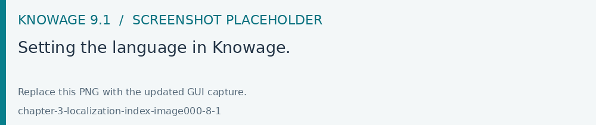
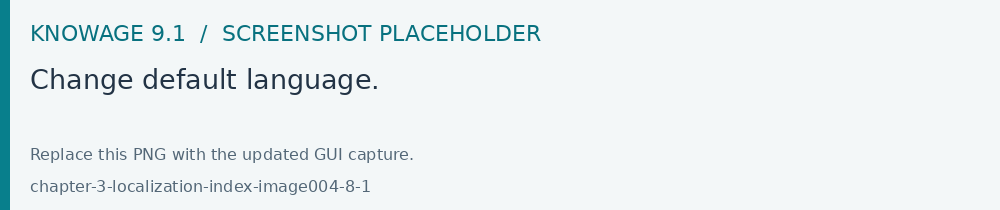
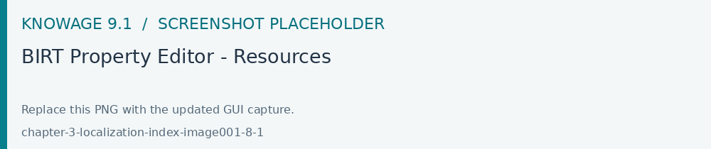
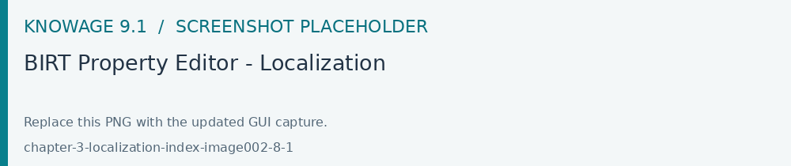

How use Localization Management
Open Modules > Internationalization to maintain user-defined labels. Check labels in the target locale and with the intended tenant. These labels complement the interface translations supplied with Knowage.
Knowage allows to change the localization in order to use different languages. We can distinguish two main categories:
System labels: the labels of the Knowage Graphical User Interface
User labels: labels created by the user in documents or objects created
The user can change the language to use in Knowage by doing the following:

Fig. 590 Setting the language in Knowage.
System labels
It is also possible to change the default language to use the first time the user logs in; to do this the admin needs to:
Open the menu and select under Server Settings, Configuration Management
Change the property SPAGOBI.LANGUAGE_SUPPORTED.LANGUAGE.default and insert the locale under the column valueCheck using the format languageCode, nationalVariety (e.g.: en,US)
The currently supported languages for system labels are: - Italian - English - French - Spanish

Fig. 591 Change default language.
It is also possible to translate objects created by the user like:
Analytical Driver name shown in the Parameter Panel
Name and description of an analytical document
Name of a menu entry
Name of a dataset shown in the Workspace
Name of a business model shown in the Workspace
Name of a federation shown in the Workspace
Name of a functionality (folder) in the document browser
Name of a cross navigation when requested to a final user
Inside a dashboard: Title of columns in a table widget and crosstab, title, subtitle, no data message, axis and legend title in the charts
User labels
To set User labels:
Check the available languages under the Domains configuration in the Admin menu (see the entry with domain code LANG). The ValueCd must have the ISO code of the language (three letters).
- Inside the knowage metadata database the table SBI_I18N_MESSAGES contains the labels translations.
LANGUAGE_CD: must be the ID of the language from the SBI_DOMAINS table
LABEL: is the label name to be used as placeholder, must begin with i18n
MESSAGE: contains the translated string in that particular language that corresponds to that label
ORGANIZATION: the tenant name
BIRT labels
Select the report and set the resource file bundle name in the resources tab of the Property Editor; the default message bundle is messages. The name of the properties file is messages_ plus the current locale, e.g. for English USA language: messages_en_US.properties

Fig. 592 BIRT Property Editor - Resources
The messages file has a syntax like this for each label, message_code = internationalised message For example: title_code = title of the document
To localize a message in a field within a report template, the user needs to define the code filling the Text key field by clicking on the Localization voice under the field properties tab.

Fig. 593 BIRT Property Editor - Localization